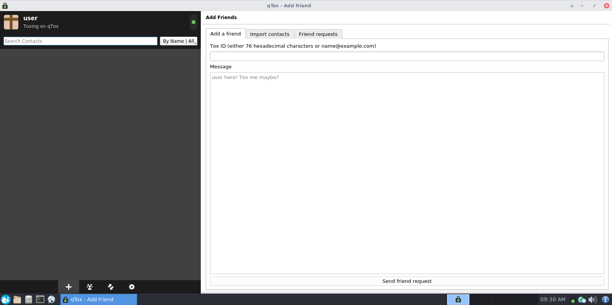

We believe security software like Whonix needs to remain Open Source and independent. Would you help sustain and grow the project? Learn more about our 14 year success story and maybe DONATE!
Template:Tox
Introduction
Tox [1] [2] looks like a promising solution for secure, encrypted communications. The official client implementation is based on the TokTok protocol library, which is very feature-rich and has a variety of functions besides VoIP. By default, Tox does not attempt to cloak your IP address from authorized contacts. However, Tox is the only Tor compatible VoIP solution we know of, allowing communication with others even if they are not anonymous. [3] Desktop versions are available for every major OS, however mobile support is lacking. [4]
In the Tox design, your public key is your Tox ID, which is looked up in the DHT network. Users can optionally create a vanity address using a DNS directory that maps ID hashes to human usable addresses (though no strong guarantees against spoofing are possible). Users can message friends, join public/private chat rooms and send each other large files. Everything is encrypted using the NaCl crypto library, via libsodium. [5] [6] Tox helps to protect user privacy by: [7]
- Removing the need to rely on central authorities to provide messenger services
- Enforcing end-to-end encryption with perfect forward secrecy as the default and only mode of operation for all messages
- Making your identity impossible to forge without the possession of your personal private key, which never leaves your computer
As of late-2018, the following secure (encrypted) features have been implemented: [8]
- Voice and video calls.
- Instant messaging.
- Desktop screen sharing / streaming.
- File sharing.
- Typing indicators.
- Message read-receipts.
- Profile encryption.
- Group messaging, voice and video conferencing.
Additional features can be implemented by any client, so long as they are supported by the core protocol. Features that are not related to the core networking system are left up to the client. [9]
Start qTox
qTox is installed by default in Whonix-Workstation™. [10]
Can be started from start menu.
To launch qTox from command line, run.
qtox
Figure: qTox Client in Whonix

TODO
TODO: Add instructions on how to use Tox with Stream Isolation.
- ↑ https://wiki.tox.chat/users/faq#what_is_tox
- ↑ https://tox.chat
- ↑ https://wiki.tox.chat/users/tox_over_tor_tot
- ↑ https://wiki.tox.chat/clients
- ↑ https://nacl.cr.yp.to/
- ↑ Tox employs curve25519 for its key exchanges, xsalsa20 for symmetric encryption, and poly1305 for MACs. https://tox.chat/faq.html
- ↑ https://tox.chat/faq.html
- ↑ Depending on the mobile / desktop client in use.
- ↑ https://en.wikipedia.org/wiki/Tox_(software)
- ↑ * https://forums.whonix.org/t/whonix-virtualbox-15-0-0-0-7-debian-buster-based-testers-wanted/7131/6 * https://forums.whonix.org/t/tox-qtox-whonix-integration/1219